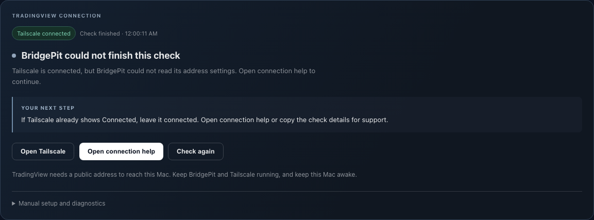

A clear result after “Check again”
This update shows when the public-address check starts, when it finishes and what to do next. If it cannot finish, you can copy a short diagnostic to share with Luc.
Download BridgePit 1.4.21 for Mac ↓Signed and notarized for Apple silicon Macs. This is the test update for Gilles. The main website download remains 1.4.20.
One check in the updated app
- Quit the old BridgePit using its Dock menu. Open the downloaded installer and drag BridgePit into Applications, replacing the older application.
- Launch BridgePit from Applications. Keep your existing paper setup and data.
- Open Settings → Your public address and click Check again once. You should see progress, then a result and next action.
- If it cannot finish, choose Open connection help → Copy check details and paste the copied text to Luc. Copying only uses your clipboard; it does not send a message.
Stay in broker-free paper mode. Once your public address is saved, continue with the setup guide. If the same problem remains, leave Tailscale connected and share the diagnostic.
Preview the changes
These are the actual updated screens with isolated paper data and simulated check results. They demonstrate the new feedback; Gilles’s specific setup issue still needs his diagnostic.
A completed check clearly states its result and offers the next action.

Installer verification
Version 1.4.21 · SHA-256467985956602f508f04fdaf59b813e6f215f5bd6e873bcb139c259c54ea2847d